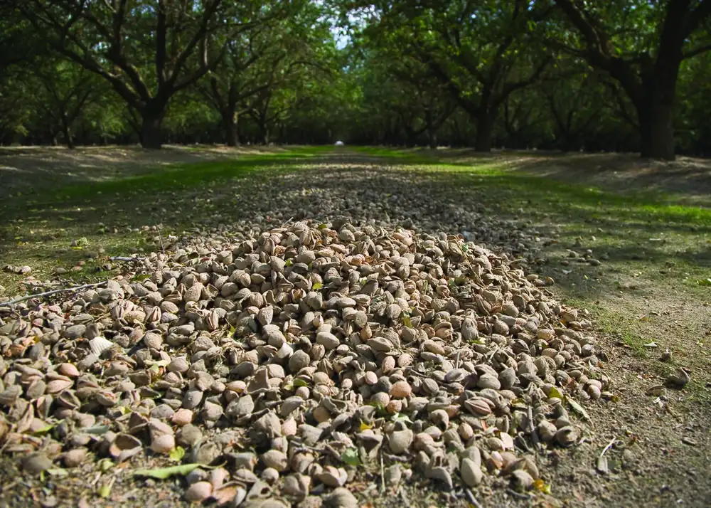

Community Services & Food Bank
Food, clothing and care for our neighbors in Ceres and Stanislaus County.
Community Food Bank
First Thursday of each month, 8:30 a.m. confirm: the current site lists 1st & 3rd Thursdays 9–11 a.m.
We offer food and clothing and some household commodities, based upon items that have been donated.
What to bring to register for a food box
- Identification for all members of the family you are claiming
- Proof of income (or proof of lack of income)
- A bill or letter sent to your address showing that you live in Stanislaus County

Second Harvest Mobile Fresh
Second Harvest's Mobile Fresh program distributes food on the third Tuesday of the month, 10:00–11:00 a.m. confirm time Everyone is eligible. Our clothing service is available at that time as well.
Photo placeholderFood bank distribution day (faces only with permission)
Help out
Volunteers and donations of non-perishable food and gently used clothing are always welcome. drop-off times
At a glance
Food Bank: 1st Thursday, 8:30 a.m.
Mobile Fresh: 3rd Tuesday, 10 a.m.
Contact: Leader name
ceresadventist@sbcglobal.net